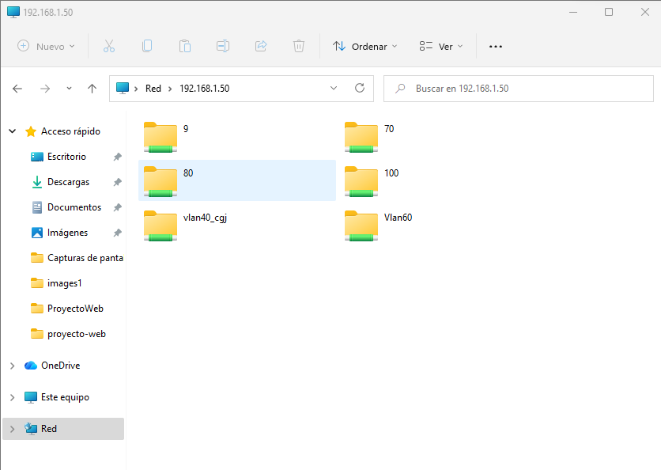

En esta ventana lo que podemos ver es que estamos intentando acceder al NAS a través de su IP mediante la web. En esta ventana también podemos ver cómo estamos accediendo poniendo el usuario admin y contraseña openmediavault todo en MINÚSCULAS.
